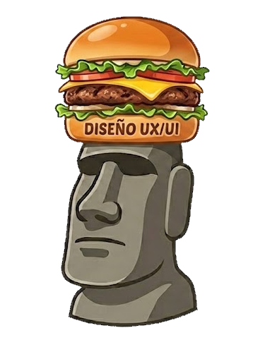

Wendy's Argentina — wendys.com.ar — evaluado contra las cuatro leyes de UX y las diez heurísticas de Nielsen, detrás de un flujo de evaluación a ciegas que primero pide criterio propio y recién después muestra el veredicto.

Evaluar un producto real contra principios establecidos
wendys.com.ar, en escritorio y en móvil, contra las 4 leyes de UX y las 10 heurísticas de Nielsen — no una maqueta propia.
Sostener cada hallazgo con evidencia medible
Nada se puntúa a ojo: cada incumplimiento lleva una comprobación reproducible — la caja de un control, el foco calculado, el árbol de accesibilidad, el texto literal.
Aplicar los principios evaluados al propio diseño de la app
El flujo de cuatro pasos, el sistema visual y la accesibilidad de la propia herramienta son un caso de estudio de lo que se está enseñando.
Formar criterio propio antes de ver el veredicto
Un flujo de evaluación a ciegas: el usuario carga sus propios hallazgos y recién después puede contrastarlos con el tablero de referencia.
Selección
Elegís qué principios vas a evaluar — todos o un subconjunto — antes de ver ningún hallazgo.
Tu evaluación
Cargás cero, uno o varios hallazgos propios por principio, con los mismos ocho campos del tablero final.
Confirmación
Revisás el resumen y confirmás con un gesto deliberado: al desplegar el tablero, tu evaluación queda bloqueada.
Tablero
Recién acá se pide el JSON de hallazgos: aparece el tablero completo con comparación lado a lado, exportación y reinicio.
Hick, Fitts, Jakob y Miller. 3 hallazgos sobre 4 principios evaluados.
Las diez heurísticas de usabilidad. 9 hallazgos sobre 10 principios, 7 con incumplimientos.
El tiempo que lleva decidir crece con la cantidad de opciones que se ofrecen a la vez — por eso cada pantalla tiene una sola acción primaria.
Un objetivo se alcanza más rápido cuanto más grande es y cuanto menos desplazamiento exige — de ahí el mínimo táctil de 44×44 px.
El usuario pasa la mayor parte de su tiempo en otros productos y espera que este funcione igual — apartarse del patrón dominante exige una razón escrita.
La memoria inmediata retiene alrededor de siete elementos a la vez sin esfuerzo — ningún menú ni grupo sin jerarquía las supera.
Visibilidad del estado
El usuario sabe qué está haciendo el sistema y toda acción recibe respuesta.
Mundo real
La interfaz habla el idioma del usuario, no la jerga del sistema.
Control y libertad
Toda función necesita una salida: deshacer, cancelar, volver.
Consistencia
Un mismo concepto se llama y se ve siempre igual.
Prevención de errores
El buen diseño hace que el error sea imposible, no solo detectable.
Reconocer, no recordar
La interfaz carga con el peso de la memoria, no el usuario.
Flexibilidad
Sirve al principiante y al experto: navegación clara y atajos.
Minimalismo
La pantalla contiene solo lo esencial para la tarea en curso.
Recuperación de errores
El error se explica y ofrece un camino de salida claro.
Ayuda y documentación
Encontrable, orientada a la tarea y concisa.
Leer las reglas operativas
Cada principio se tradujo a reglas binarias, comprobables mirando una pantalla o leyendo el código.
Recorrer el producto real
En un navegador real, en escritorio y en móvil de 375 px — sin completar compras ni cargar datos personales.
Medir, no opinar
Por cada regla incumplida: la caja del control, el foco calculado, el árbol de accesibilidad, el texto literal de la interfaz.
Puntuar y priorizar
Gravedad y facilidad de arreglo de 1 a 5; la prioridad sale del promedio, calculado por la aplicación — nunca a ojo.
Trabajo práctico de evaluación heurística. El producto evaluado es un sitio público de terceros; este trabajo no tiene vínculo con la marca ni la representa.